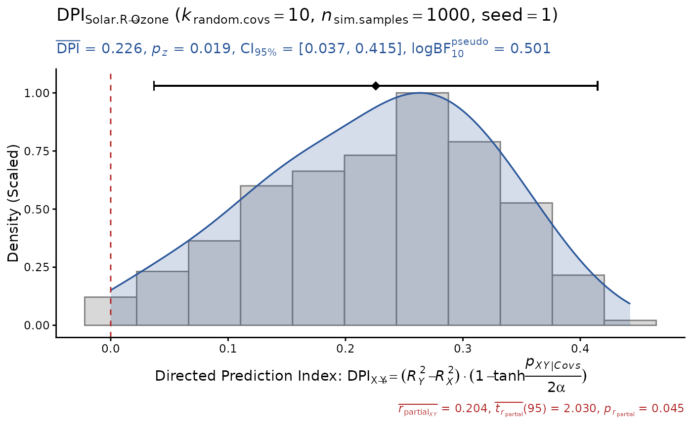
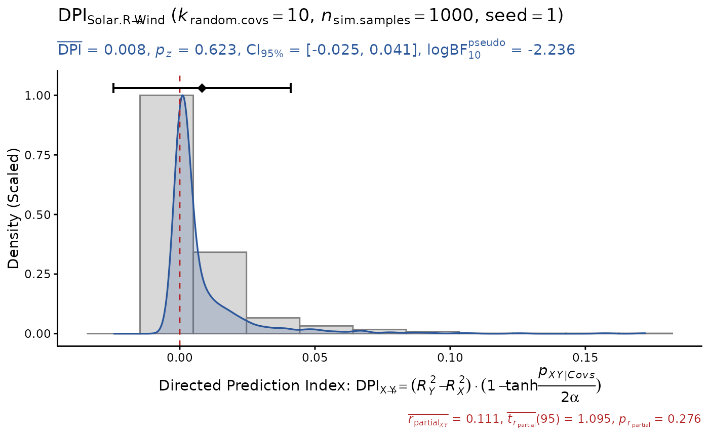
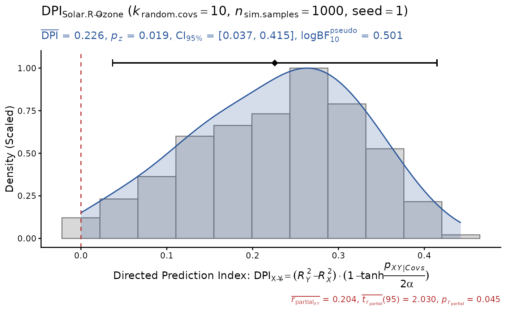
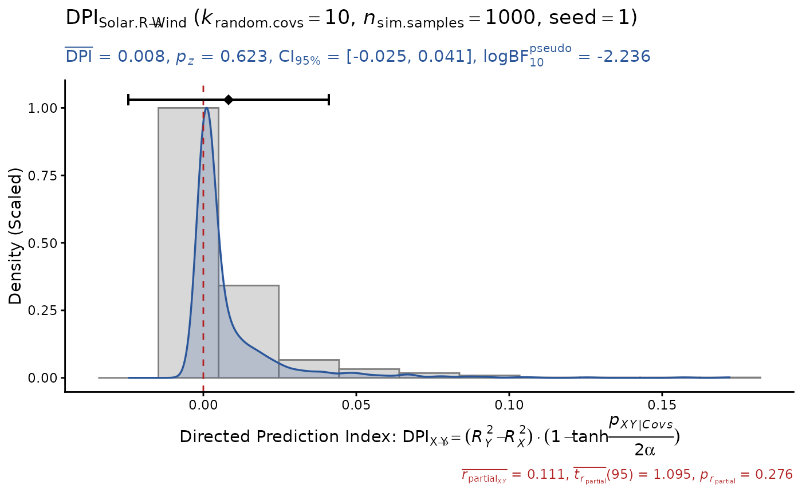

The Directed Prediction Index (DPI) is a quasi-causal inference method for cross-sectional data designed to quantify the relative endogeneity (relative dependence) of outcome (Y) vs. predictor (X) variables in regression models. By comparing the proportion of variance explained (R-squared) between the Y-as-outcome model and the X-as-outcome model while controlling for a sufficient number of possible confounders, it can suggest a plausible (admissible) direction of influence from a more exogenous variable (X) to a more endogenous variable (Y). Methodological details are provided at https://psychbruce.github.io/DPI/.
Usage
DPI(
model,
y,
x,
data = NULL,
k.cov = 1,
n.sim = 1000,
alpha = 0.05,
bonf = FALSE,
seed = NULL,
progress,
file = NULL,
width = 6,
height = 4,
dpi = 500
)Arguments
- model
Model object (
lm).- y
Dependent (outcome) variable.
- x
Independent (predictor) variable.
- data
[Optional] Defaults to
NULL. Ifdatais specified, thenmodelwill be ignored and a linear modellm({y} ~ {x} + .)will be fitted inside. This is helpful for exploring all variables in a dataset.- k.cov
Number of random covariates (simulating potential omitted variables) added to each simulation sample.
Defaults to
1. Please also test differentk.covvalues as robustness checks (seeDPI_curve()).If
k.cov> 0, the raw data (without bootstrapping) are used, withk.covrandom variables appended, for simulation.If
k.cov= 0 (not suggested), bootstrap samples (resampling with replacement) are used for simulation.
- n.sim
Number of simulation samples. Defaults to
1000.- alpha
Significance level for computing the
Strengthscore (0~1) based on p value of partial correlation betweenXandY. Defaults to0.05.Direction = R2.Y - R2.XStrength = 1 - tanh(p.beta.xy/alpha/2)
- bonf
Bonferroni correction to control for false positive rates:
alphais divided by, and p values are multiplied by, the number of comparisons.Defaults to
FALSE: No correction, suitable if you plan to test only one pair of variables.TRUE: Usingk * (k - 1) / 2(number of all combinations of variable pairs) wherek = length(data).A user-specified number of comparisons.
- seed
Random seed for replicable results. Defaults to
NULL.- progress
Show progress bar. Defaults to
FALSE(ifn.sim< 5000).- file
File name of saved plot (
".png"or".pdf").- width, height
Width and height (in inches) of saved plot. Defaults to
6and4.- dpi
Dots per inch (figure resolution). Defaults to
500.
Value
Return a data.frame of simulation results:
DPI= Direction * Strength= (R2.Y - R2.X) * (1 - tanh(p.beta.xy/alpha/2))
delta.R2R2.Y - R2.X
R2.Y\(R^2\) of regression model predicting Y using X and all other covariates
R2.X\(R^2\) of regression model predicting X using Y and all other covariates
t.beta.xyt value for coefficient of X predicting Y (always equal to t value for coefficient of Y predicting X) when controlling for all other covariates
p.beta.xyp value for coefficient of X predicting Y (always equal to p value for coefficient of Y predicting X) when controlling for all other covariates
df.beta.xyresidual degree of freedom (df) of
t.beta.xy
r.partial.xypartial correlation (always with the same t value as
t.beta.xy) between X and Y when controlling for all other covariates
Examples
# input a fitted model
model = lm(Ozone ~ ., data=airquality)
DPI(model, y="Ozone", x="Solar.R", seed=1) # DPI > 0
#> Sample size: N.valid = 111
#> Model Y formula: Ozone ~ Solar.R + Wind + Temp + Month + Day
#> Model X formula: Solar.R ~ Ozone + Wind + Temp + Month + Day
#> Directed prediction: "Solar.R" (X) -> "Ozone" (Y)
#> Partial correlation: r(partial).XY = 0.205, p = 0.0353 *
#> Simulation sample settings: k.random.covs = 1, n.sim = 1000, seed = 1
#> False positive rates (FPR) control: Alpha = 0.05 (Bonferroni correction = 1)
#> Estimate Sim.SE z.value p.z sig Conf.Interval
#> DPI 0.297 (0.031) 9.453 3e-21 *** [0.236, 0.359]
 DPI(model, y="Ozone", x="Wind", seed=1) # DPI > 0
#> Sample size: N.valid = 111
#> Model Y formula: Ozone ~ Wind + Solar.R + Temp + Month + Day
#> Model X formula: Wind ~ Ozone + Solar.R + Temp + Month + Day
#> Directed prediction: "Wind" (X) -> "Ozone" (Y)
#> Partial correlation: r(partial).XY = -0.449, p = 1e-06 ***
#> Simulation sample settings: k.random.covs = 1, n.sim = 1000, seed = 1
#> False positive rates (FPR) control: Alpha = 0.05 (Bonferroni correction = 1)
#> Estimate Sim.SE z.value p.z sig Conf.Interval
#> DPI 0.223 (0.009) 25.296 <1e-99 *** [0.206, 0.240]
DPI(model, y="Ozone", x="Wind", seed=1) # DPI > 0
#> Sample size: N.valid = 111
#> Model Y formula: Ozone ~ Wind + Solar.R + Temp + Month + Day
#> Model X formula: Wind ~ Ozone + Solar.R + Temp + Month + Day
#> Directed prediction: "Wind" (X) -> "Ozone" (Y)
#> Partial correlation: r(partial).XY = -0.449, p = 1e-06 ***
#> Simulation sample settings: k.random.covs = 1, n.sim = 1000, seed = 1
#> False positive rates (FPR) control: Alpha = 0.05 (Bonferroni correction = 1)
#> Estimate Sim.SE z.value p.z sig Conf.Interval
#> DPI 0.223 (0.009) 25.296 <1e-99 *** [0.206, 0.240]
 DPI(model, y="Wind", x="Solar.R", seed=1) # unrelated
#> Sample size: N.valid = 111
#> Model Y formula: Wind ~ Solar.R + Ozone + Temp + Month + Day
#> Model X formula: Solar.R ~ Wind + Ozone + Temp + Month + Day
#> Directed prediction: "Solar.R" (X) -> "Wind" (Y)
#> Partial correlation: r(partial).XY = 0.114, p = 0.2447
#> Simulation sample settings: k.random.covs = 1, n.sim = 1000, seed = 1
#> False positive rates (FPR) control: Alpha = 0.05 (Bonferroni correction = 1)
#> Estimate Sim.SE z.value p.z sig Conf.Interval
#> DPI 0.004 (0.005) 0.903 0.3666 [-0.005, 0.014]
DPI(model, y="Wind", x="Solar.R", seed=1) # unrelated
#> Sample size: N.valid = 111
#> Model Y formula: Wind ~ Solar.R + Ozone + Temp + Month + Day
#> Model X formula: Solar.R ~ Wind + Ozone + Temp + Month + Day
#> Directed prediction: "Solar.R" (X) -> "Wind" (Y)
#> Partial correlation: r(partial).XY = 0.114, p = 0.2447
#> Simulation sample settings: k.random.covs = 1, n.sim = 1000, seed = 1
#> False positive rates (FPR) control: Alpha = 0.05 (Bonferroni correction = 1)
#> Estimate Sim.SE z.value p.z sig Conf.Interval
#> DPI 0.004 (0.005) 0.903 0.3666 [-0.005, 0.014]
 # input raw data, test with more random covs
DPI(data=airquality, y="Ozone", x="Solar.R", k.cov=10, seed=1)
#> Sample size: N.valid = 111
#> Model Y formula: Ozone ~ Solar.R + Wind + Temp + Month + Day
#> Model X formula: Solar.R ~ Ozone + Wind + Temp + Month + Day
#> Directed prediction: "Solar.R" (X) -> "Ozone" (Y)
#> Partial correlation: r(partial).XY = 0.204, p = 0.0452 *
#> Simulation sample settings: k.random.covs = 10, n.sim = 1000, seed = 1
#> False positive rates (FPR) control: Alpha = 0.05 (Bonferroni correction = 1)
#> Estimate Sim.SE z.value p.z sig Conf.Interval
#> DPI 0.226 (0.096) 2.342 0.0192 * [0.037, 0.415]

DPI(data=airquality, y="Ozone", x="Wind", k.cov=10, seed=1)
#> Sample size: N.valid = 111
#> Model Y formula: Ozone ~ Wind + Solar.R + Temp + Month + Day
#> Model X formula: Wind ~ Ozone + Solar.R + Temp + Month + Day
#> Directed prediction: "Wind" (X) -> "Ozone" (Y)
#> Partial correlation: r(partial).XY = -0.449, p = 4e-06 ***
#> Simulation sample settings: k.random.covs = 10, n.sim = 1000, seed = 1
#> False positive rates (FPR) control: Alpha = 0.05 (Bonferroni correction = 1)
#> Estimate Sim.SE z.value p.z sig Conf.Interval
#> DPI 0.203 (0.027) 7.567 4e-14 *** [0.150, 0.255]
DPI(data=airquality, y="Wind", x="Solar.R", k.cov=10, seed=1)
#> Sample size: N.valid = 111
#> Model Y formula: Wind ~ Solar.R + Ozone + Temp + Month + Day
#> Model X formula: Solar.R ~ Wind + Ozone + Temp + Month + Day
#> Directed prediction: "Solar.R" (X) -> "Wind" (Y)
#> Partial correlation: r(partial).XY = 0.111, p = 0.2765
#> Simulation sample settings: k.random.covs = 10, n.sim = 1000, seed = 1
#> False positive rates (FPR) control: Alpha = 0.05 (Bonferroni correction = 1)
#> Estimate Sim.SE z.value p.z sig Conf.Interval
#> DPI 0.008 (0.017) 0.492 0.6225 [-0.025, 0.041]

# input raw data, test with more random covs
DPI(data=airquality, y="Ozone", x="Solar.R", k.cov=10, seed=1)
#> Sample size: N.valid = 111
#> Model Y formula: Ozone ~ Solar.R + Wind + Temp + Month + Day
#> Model X formula: Solar.R ~ Ozone + Wind + Temp + Month + Day
#> Directed prediction: "Solar.R" (X) -> "Ozone" (Y)
#> Partial correlation: r(partial).XY = 0.204, p = 0.0452 *
#> Simulation sample settings: k.random.covs = 10, n.sim = 1000, seed = 1
#> False positive rates (FPR) control: Alpha = 0.05 (Bonferroni correction = 1)
#> Estimate Sim.SE z.value p.z sig Conf.Interval
#> DPI 0.226 (0.096) 2.342 0.0192 * [0.037, 0.415]

DPI(data=airquality, y="Ozone", x="Wind", k.cov=10, seed=1)
#> Sample size: N.valid = 111
#> Model Y formula: Ozone ~ Wind + Solar.R + Temp + Month + Day
#> Model X formula: Wind ~ Ozone + Solar.R + Temp + Month + Day
#> Directed prediction: "Wind" (X) -> "Ozone" (Y)
#> Partial correlation: r(partial).XY = -0.449, p = 4e-06 ***
#> Simulation sample settings: k.random.covs = 10, n.sim = 1000, seed = 1
#> False positive rates (FPR) control: Alpha = 0.05 (Bonferroni correction = 1)
#> Estimate Sim.SE z.value p.z sig Conf.Interval
#> DPI 0.203 (0.027) 7.567 4e-14 *** [0.150, 0.255]
DPI(data=airquality, y="Wind", x="Solar.R", k.cov=10, seed=1)
#> Sample size: N.valid = 111
#> Model Y formula: Wind ~ Solar.R + Ozone + Temp + Month + Day
#> Model X formula: Solar.R ~ Wind + Ozone + Temp + Month + Day
#> Directed prediction: "Solar.R" (X) -> "Wind" (Y)
#> Partial correlation: r(partial).XY = 0.111, p = 0.2765
#> Simulation sample settings: k.random.covs = 10, n.sim = 1000, seed = 1
#> False positive rates (FPR) control: Alpha = 0.05 (Bonferroni correction = 1)
#> Estimate Sim.SE z.value p.z sig Conf.Interval
#> DPI 0.008 (0.017) 0.492 0.6225 [-0.025, 0.041]
